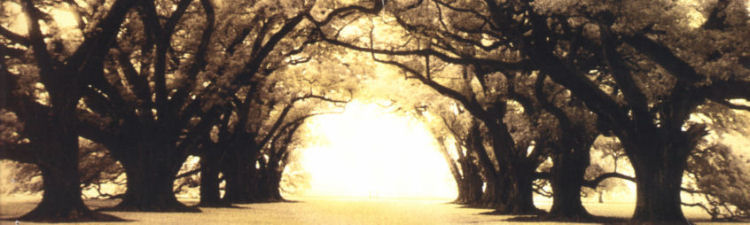
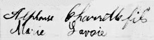

|

ALPHONSE AND MARIE
|
Alphonse is born
on February 13, 1874, in Saint-Henri, Montréal. He is the eldest
son of the large family of Alphonse and
Rosianne. His godfather is Charles
Charette, his father's eldest brother, and his godmother
Théotiste Dubois, his paternal grandmother.
All his life Alphonse will follow in his father's footsteps. |
Marie is born on November
5, 1875, in Saint-Martin, Laval. She is the daughter
of Olivier Lavoie and Anastasie Lortie (or Hortie).
Her godfather is André Montreuil and her godmother Marguerite
Duranceau.
According to Marie's baptism record, her father is a farmer.
Her parents had married on May 1, 1871, in Sainte-Dorothée,
Laval.
Olivier and his family later move to Saint-Henri,
Montréal.
Marie has a brother, Aldéric, who marries Rose-Anna Charette (Alphonse's sister)
on July 30, 1901, and a sister, Rose-Anna, who marries Joseph Huneault
on June 1, 1891, in Saint-Henri.
|


On Monday, May 15, 1893, Alphonse Charette Jr.
marries Marie Lavoie in Saint-Henri parish in Montréal. The groom's witness is his father Alphonse, and the
bride's is her father Olivier.
Alphonse and Marie sign their marriage record. Alphonse is
nineteen and Marie seventeen. She is a pretty young
redhead (Rosario's cousins would later tell
Ghislaine that "Marie had red hair").
|

The couple's signatures on their marriage record
|
The
young couple settles at 1098 Saint-Antoine, next door
to Alphonse's parents. In the Lovell street directories this flat
regularly appears as
lived in, one after another, by Charettes of several
generations. Who owns it?
In 1896 the couple moves to 1096 Saint-Antoine, another
flat already lived in by Alphonse's parents. Then, in
1900, they are found at 238 Saint-Ferdinand. Like
his father, Alphonse is a mason. No doubt the son
works with the father. When the father retires, Alphonse
in turn becomes a masonry contractor. This is first mentioned
in the Lovell directory of 1910. He is proud of
his work: in the photo opposite he poses, with
several members of his family, in front of a stone carved with
his name, a kind of artist's signature set on
a building under construction. Where is that stone now? Like
his father, Alphonse is a mason. No doubt the son
works with the father. When the father retires, Alphonse
in turn becomes a masonry contractor. This is first mentioned
in the Lovell directory of 1910. He is proud of
his work: in the photo opposite he poses, with
several members of his family, in front of a stone carved with
his name, a kind of artist's signature set on
a building under construction. Where is that stone now?
Like his father,
Alphonse builds a fine cut-stone house for his
family, at 1121 Saint-Antoine. They move in from
1907 and will live there until their deaths. Orphaned, their son Rosario
goes on living there during the first years of his marriage.
 Like his father,
Alphonse becomes an important property owner in
Saint-Henri (according to the mother of Rachel
Philipe-Charette, who was one of Alphonse's tenants). Alphonse
father and son are involved in their extended family and their community, and
see to everything, even winter fun, as the
photo opposite shows. Like his father,
Alphonse becomes an important property owner in
Saint-Henri (according to the mother of Rachel
Philipe-Charette, who was one of Alphonse's tenants). Alphonse
father and son are involved in their extended family and their community, and
see to everything, even winter fun, as the
photo opposite shows.
This toboggan slide, built
by them for the family and the neighbours, even drew
people from Montréal, and everyone had great fun on it. (Story
passed on by Ghislaine, who heard it from Rita and Fleurette
Lavoie, Rosario's cousins)
The
two Alphonses are modern men. They are quick to buy
automobiles, and are even said to have taken part in a (dirt-road) Montréal-New York rally
early in the century.
Marie
dies on November 19, 1914, at the age of thirty-nine. For
Marie, Alphonse Sr. buys plot R-1539 in the
Notre-Dame-des-Neiges cemetery on November 21. She is buried there on November
23. Alphonse Jr. has the first names of his six
children who died engraved at the top right of the headstone,
even though they are not buried in that plot. He in turn
dies on July 9, 1916, at the age of forty-two. A few days earlier he had made his will, in
which he leaves all his property to his two underage sons and
names as their guardian his brother-in-law and friend, Aldéric
Lavoie.
|
|
THE BEREAVEMENTS OF ALPHONSE AND
MARIE
 Although nine children were born to them, Alphonse
and Marie see only two of them grow up. Most
of the others die of infectious diseases, and Marie is said to have caught one of these diseases
while nursing them. At least, that is what Rosario would later tell
his children when they asked him about their
grandmother Marie (Gérard's recollection).
Yet no child
died in 1914... The 1910 family photo opposite
shows only two children. The 1911 census counts
no more. What is the real reason for Marie's
death? It is well known that children are not always told the
truth.... Although nine children were born to them, Alphonse
and Marie see only two of them grow up. Most
of the others die of infectious diseases, and Marie is said to have caught one of these diseases
while nursing them. At least, that is what Rosario would later tell
his children when they asked him about their
grandmother Marie (Gérard's recollection).
Yet no child
died in 1914... The 1910 family photo opposite
shows only two children. The 1911 census counts
no more. What is the real reason for Marie's
death? It is well known that children are not always told the
truth....
One can only note how Alphonse and
Marie, though from a comfortable working-class background, lived through
heart-breaking losses. Close by, in the same
surroundings, the couple of Aldéric Lavoie, Marie's brother, and Rose Anna
Charette, Alphonse's sister, also have several children, and all of them reach adulthood. Why was fate
different for Alphonse and Marie? They are not the only ones to
suffer such losses, but that is surely no
consolation. In that era of fervent Catholicism there was no
doubt the refuge of prayer and the sense of sacrifice, but was that
enough for them?
At the beginning of the 20th century, 25% of children
die before the age of one. Children under five
account for half of all deaths in a year, and most
die of contagious diseases. Out of fatalism, society
accepts a child's death as normal; children are not admitted to
hospital before the age of two. So, in 1907, the founding
of the Hôpital Sainte-Justine for poor children by
Dr. Irma Levasseur, Québec's first woman doctor, together
with Justine Beaubien, meets a crying need
and reflects a change in attitudes about the value of a
child's life. |
|
THE
DESCENDANTS OF ALPHONSE AND MARIE |
| Unnamed, the
couple's first child is a girl born on March 5, 1894. She
lives only fifteen minutes and is ondoyée (given emergency baptism). She is buried on
March 7. |
Émile is born on July
2, 1895, in Saint-Henri. His godparents are Alphonse Charette
and Rosianne Miron, his paternal grandparents.
He dies on August 6, 1895, and is buried on August 8. |
Rosario is born on
January 20, 1897, in Saint-Henri. His godparents are Alphonse
Charette and Rosianne Miron, his paternal
grandparents.
On January 16, 1916, in Saint-Zotique parish, he marries
Marie-Anna Caron, daughter of Arthur and Alphonsine Gagnon.
He dies on May 21, 1940, in Saint-Henri.
Rosario
is
our ancestor of the 10th generation |
Argentine is born on
November 28, 1898, in Saint-Henri. Her godfather is Aldéric Lavoie
and her godmother Rose-Anna Charette, the child's uncle and aunt.
She dies on December 18, 1900, and is buried on December
20. |
Alma is born on September
12, 1900, in Saint-Henri. Her godfather is Jacques Charette
and her godmother Mathilda Ouimet, the child's great-uncle and great-aunt
on her father's side.
We do not know the date of her death, probably before 1910. |
Alexandre is born on
October 2, 1901, in Saint-Henri. His godfather is Arthur Messier and
his godmother Alexina Charette, the child's aunt. Alexandre
studies pharmacy, a new faculty at the Université de
Montréal.
He dies on August 13, 1924, when his car falls into the
Lachine Canal. He is buried on August 21. |
René is born on July
27, 1903, in Saint-Henri. His godfather is Léonard Miron and
his godmother Cléophée Therrien, the child's great-uncle and great-aunt
on his father's side.
He dies on July 11, 1904, and is buried on July 13. |
Réal is born on March
12, 1905, in Saint-Henri. His godfather is Arthur Charette, his
uncle, and his godmother Ubaldine Prieur.
He dies on June 12, 1905, in Saint-Henri and is buried on June
14. |
Anatole is born on April
9, 1906, in Saint-Henri. His godfather is Oscar Charette and his
godmother Laura Cromp, the child's uncle and aunt on his
father's side.
We do not know the date of his death, probably before 1910. |
|
|